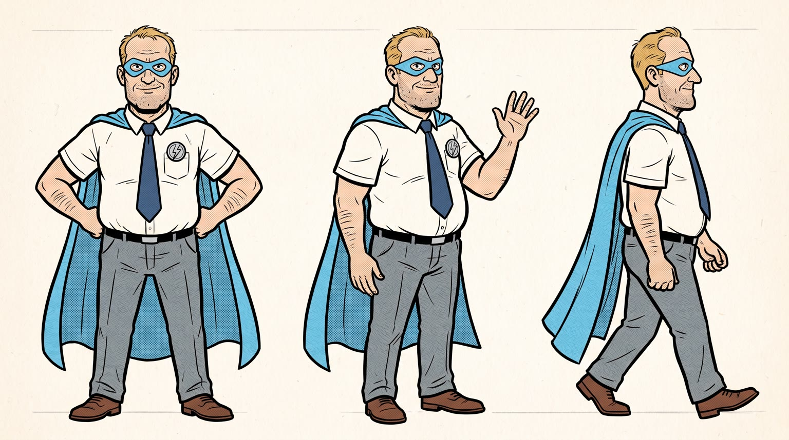
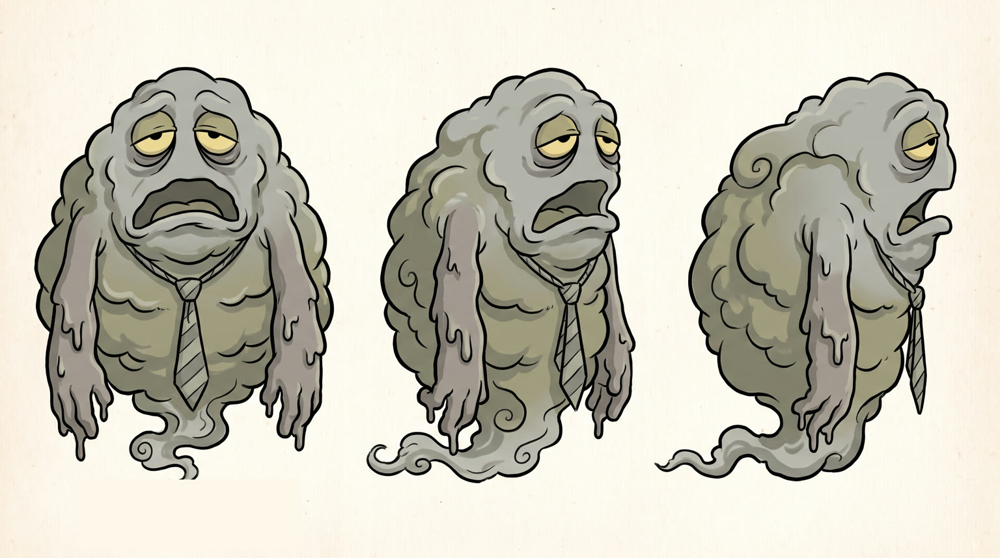
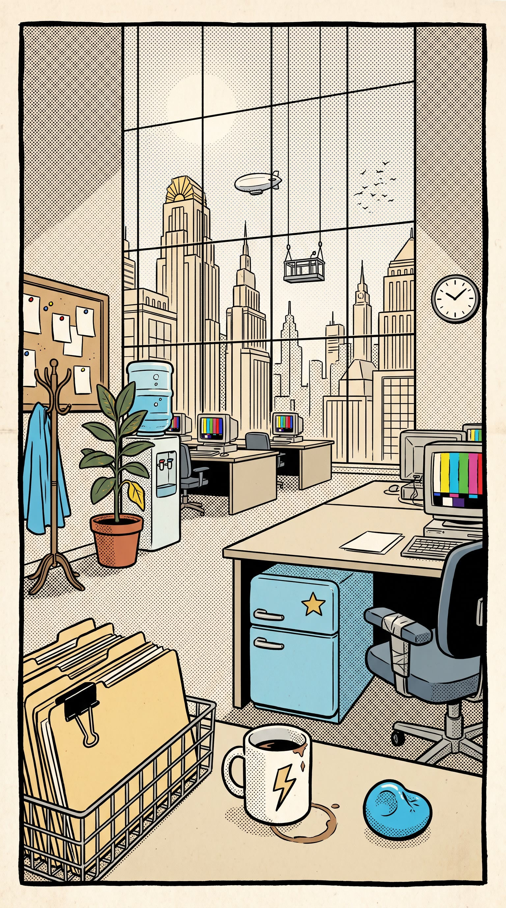
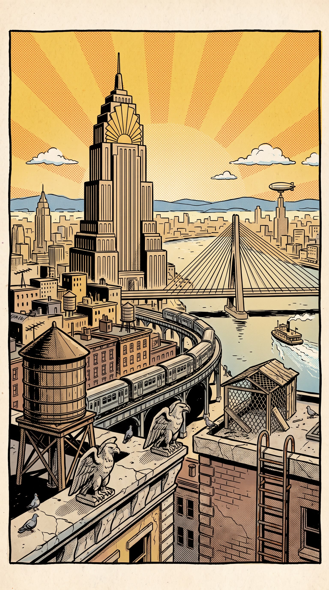
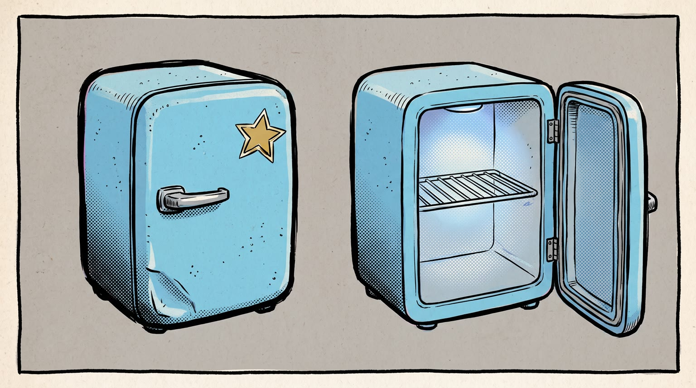
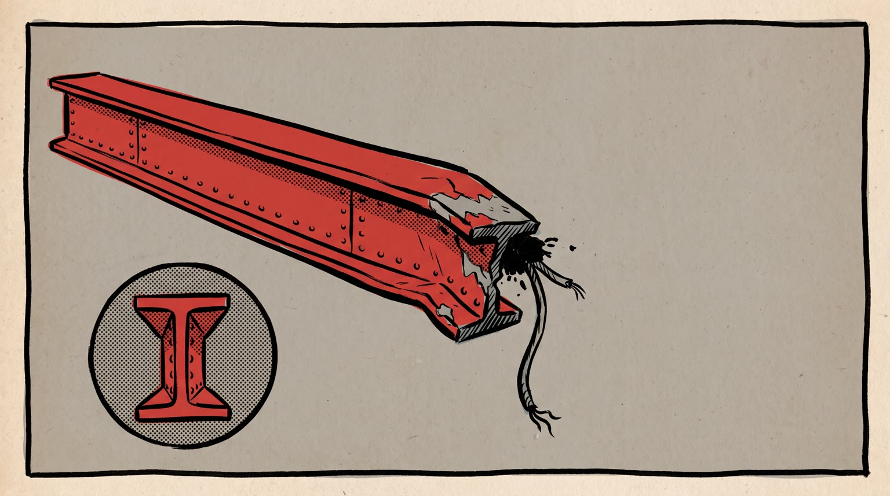
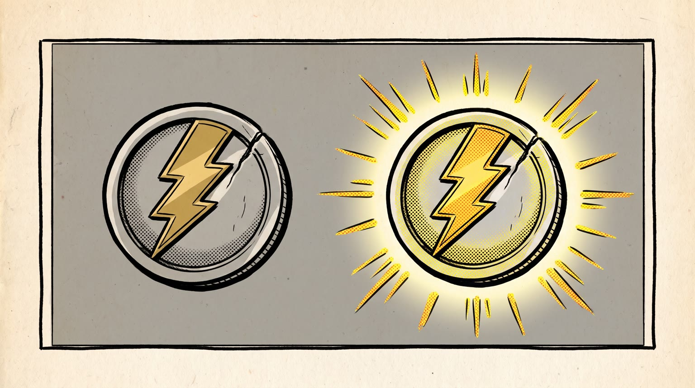

All templates · template.json · original storyboard
Comic book / motion comiccomic-01-captain-3pmCaptain 3pm
Captain 3pm is the strongest man in Brightwater City until three o'clock, when the Slump rolls in and his powers run out. Then comes issue #2, and {{product.name}}.
Fit by product type
| ingested | great | the desk fridge under desk 41-17 is the natural home for a snack or beverage ritual at 2:59 |
| applied | good | a dab below the mask from the desk drawer reads as a power-up; works for skincare, balm, fragrance, hair |
| worn | good | new gear as a costume upgrade (shoes, jacket, glasses, watch); the S06 framing widens for footwear |
| handheld | great | a gadget from the desk drawer that charges his badge is pure comic logic |
| carried | good | a bag slung like a utility belt; the rescue does not use it, so the payoff is lighter |
| home | stretch | the product beat moves to the office break nook by the window; fine for lamps, chairs, cushions, plants and appliances, not beds or bedroom furniture |
| consumable | great | a pack in the top drawer he reaches for every afternoon |
Refuses: products for children; alcohol; sleep aids, sedatives or anything whose benefit is rest or sleep (the villain is drowsiness, the product must beat it); beds, mattresses and bedroom furniture that cannot live in an office break nook
Cast, world and props (shipped with the template)







- Captain 3pm is a 32-page monthly comic printed on cheap newsprint by the fictional Harbourlight Comics. This is issue #2; issue #1 ended with the Slump escaping into the air vents of Pemberton Tower.
- By day Gord Pike processes claims at desk 41-17 on the 41st floor of Pemberton Tower. He has saved Brightwater City 212 times, every single save before three in the afternoon.
- The Slump first rose out of the Brightwater harbour fog in 1987, the year the city moved to open-plan offices. It feeds on yawns and gets bigger every hour after lunch.
- Gord's cape was sewn by his daughter from an old sky-blue bedsheet; the collar is held on by a safety pin since the Slump tore it in issue #1.
- The desk fridge under desk 41-17 is the only one on the floor that anyone is afraid to open. It has a hand-drawn gold star sticker on the door.
Script: what each line must do
Right column is the worked example for Red Bull Sugarfree.
| Time | Speaker | Intent (template) | Example |
|---|---|---|---|
| 0.3-2.2 | gord | Fixed: By noon, I'm unstoppable. Max 6 words. Delivery: big old-radio heroic narration, chest out | By noon, I'm unstoppable. |
| 2.8-4.6 | gord | Fixed: By three? Not so much. Max 7 words. Delivery: deflated, face on the desk, comic timing | By three? Not so much. |
| 5.2-6.8 | slump | Fixed: Nap time, Captain. Max 5 words. Delivery: slow, syrupy, a yawn in the middle | Nap time, Captain. |
| 7.6-8.8 | gord | Fixed: Not this issue. Max 5 words. Delivery: quiet, determined, a grin starting | Not this issue. |
| 11.6-14.2 | gord | Product line: say {{product.name}} (or its short spoken form) and the ONE benefit from product.benefits that best reads as beating the three o'clock slump (energy, focus, comfort, freshness, confidence, calm). benefit comes only from product.benefits, reworded no further than person and tense; brand spelled phonetically in the video prompt using product.phonetic Max 9 words. Delivery: heroic, restored, straight to the reader | Red Bull Sugarfree. Less tired, no sugar. |
| 18.6-20.2 | gord | Fixed: Afternoon's cancelled. Max 4 words. Delivery: shouted mid-punch, joyful | Afternoon's cancelled. |
| 22.0-24.0 | gord | Fixed: Three oh five. Back to work. Max 8 words. Delivery: casual, pleased, loosening his tie | Three oh five. Back to work. |
| 26.8-28.8 | gord (off camera) | Tagline: product.tagline if the page has one, otherwise a 3 to 5 word line that ties the product to winning the afternoon, said like the end of a radio serial. Max 6 words. Delivery: warm heroic voiceover, like the end of a radio serial | Wiiings without sugar. |
Product-adjacent props by type
| ingested | the small sky-blue desk fridge under desk 41-17 (signature object fridge), holding the product chilled on its single shelf |
| applied | the steel top drawer of desk 41-17, the product lying among blank memos |
| worn | a plain lidded box on the carpet under desk 41-17, the product folded or set inside |
| handheld | the steel top drawer of desk 41-17, the product lying among paper clips and a blank notepad |
| carried | under desk 41-17, the product propped against the desk leg |
| home | the break nook by the office window behind a blank folding screen, where the product is set up at its real size |
| consumable | the steel top drawer of desk 41-17, a pack of the product among paper clips |
Shots and how the product appears for each type
S01 · 0 to 2.4 s · absent
Captain 3pm hovers above the city at noon holding a falling steel beam over his head, cape snapping, a golden halftone sunburst behind; the top of the page is clean for the title.
S02 · 2.4 to 4.8 s · absent
Three o'clock: Gord face down on his office desk, cape limp over the chair, the panel's colour draining to grey, a plain wall clock behind with its hands at three.
S03 · 4.8 to 7.0 s · absent
The Slump, a colossal grey fog creature, oozes over the top of the office tower, yawning, drooping arms dripping onto the streets; the city goes grey beneath it.
S04 · 7.0 to 9.0 s · reveal
A paper page flip to issue #2; in the first panel Gord's hand goes to his ritual at desk 41-17 and a blue glow spills out around the product.
| ingested | a man's hand in a white short-sleeve shirt opening the door of the small sky-blue desk fridge under the desk, where {{product.visual}} stands upright and closed on the single shelf |
| applied | a man's hand in a white short-sleeve shirt pulling open the steel top desk drawer, where {{product.visual}} lies closed among blank memos |
| worn | a man's hand in a white short-sleeve shirt lifting the lid of a plain box on the carpet under the desk, where {{product.visual}} sits folded or set inside |
| handheld | a man's hand in a white short-sleeve shirt pulling open the steel top desk drawer, where {{product.visual}} lies among paper clips and a blank notepad |
| carried | a man's hand in a white short-sleeve shirt reaching under the desk for {{product.visual}} propped against the desk leg |
| home | a man's hand in a white short-sleeve shirt pulling back the blank folding screen of the break nook beside desk 41-17, revealing {{product.visual}} set up at its true size by the window |
| consumable | a man's hand in a white short-sleeve shirt pulling open the steel top desk drawer, where a pack of {{product.visual}} sits among paper clips |
S05 · 9.0 to 11.4 s · hero
The hero insert: the product raised like a trophy against a halftone sunburst as it opens, switches on or catches the light, highlights drawn in white ink.
| ingested | a man's bare forearm and fist, the rolled white shirt cuff at the edge, holding {{product.visual}} upright and raised like a trophy, his thumb opening it (a pop and an ink spray of droplets for a beverage, a torn wrapper edge for food), label facing the viewer |
| applied | a man's bare forearm and fist, the rolled white shirt cuff at the edge, holding {{product.visual}} upright and raised like a trophy, his thumb flicking or unscrewing the cap open, label facing the viewer |
| worn | a man's two hands, rolled white shirt cuffs at the edges, holding {{product.visual}} up high like a new costume piece, turned so its best side and details face the viewer |
| handheld | a man's bare forearm and fist, the rolled white shirt cuff at the edge, gripping {{product.visual}} raised like a trophy, ink light rays bursting off it, logo facing the viewer |
| carried | a man's bare forearm and fist, the rolled white shirt cuff at the edge, holding {{product.visual}} up high by its handle or strap like a trophy, logo facing the viewer |
| home | a man's hand, rolled white shirt cuff at the edge, pressed on {{product.visual}} as he switches it on or tests it, the product at its true size and lit by radiating ink light rays, its best side to the viewer |
| consumable | a man's bare forearm and fist, the rolled white shirt cuff at the edge, holding one piece from the pack of {{product.visual}} raised like a trophy, fresh out, label facing the viewer |
S06 · 11.4 to 14.4 s · in_use
Gord stands tall, cape lifting, the badge glowing, colour flooding back into the office, the product in use and fully visible; he says the product line straight to the reader.
| ingested | holding {{product.visual}} up beside his face in the foreground, open, label facing the viewer, about a third of the frame height, just after a first taste |
| applied | dabbing {{product.visual}} on his cheek just below the mask, then holding it up beside his face with the label facing the viewer |
| worn | wearing {{product.visual}} with his office outfit and cape, chest out, showing it off to the reader |
| handheld | holding {{product.visual}} up beside his face in the foreground, logo facing the viewer, the badge glowing as if charged by it |
| carried | slinging {{product.visual}} over one shoulder like a utility belt, logo facing the viewer |
| home | standing tall beside {{product.visual}} in the break nook by the window, one hand resting on it, the whole product in the panel |
| consumable | using one piece from the pack of {{product.visual}}, then holding the pack up beside his face with the label facing the viewer |
S07 · 14.4 to 17.2 s · absent
Captain 3pm bursts out through the open office window, fist first, cape streaming, ink speed lines, papers flying behind him.
S08 · 17.2 to 21.0 s · absent
The punch: Captain 3pm drives his fist through the centre of the Slump, which bursts apart into grey fog chunks; golden light blasts through the hole and the city below turns bright again.
S09 · 21.0 to 24.6 s · background
Five past three: Gord back at his desk in the bright office, cape tucked over the chair, loosening his tie with a satisfied grin, the product at home in the panel, sunlight through the window; the time comes from the caption box in post.
| ingested | {{product.visual}} open beside his keyboard in the foreground (upright, or propped at an angle if it is flat), label facing the viewer |
| applied | {{product.visual}} standing upright beside his keyboard in the foreground, cap on, label facing the viewer |
| worn | Gord wearing {{product.visual}}, clearly visible as he leans back (feet up on the desk corner if it is footwear) |
| handheld | {{product.visual}} resting beside his keyboard in the foreground, logo facing the viewer |
| carried | {{product.visual}} hanging from the back of his chair beside the tucked cape, logo facing the viewer |
| home | {{product.visual}} in the break nook by the window just behind his desk, sunlight on it, clearly visible |
| consumable | the pack of {{product.visual}} beside his keyboard in the foreground, label facing the viewer |
S10 · 24.6 to 30 s · hero
Final panel of the issue: the product in front of a halftone sunburst, the cape draped at the edge of frame; clean space for the tagline and the next-issue box.
| ingested | {{product.visual}} standing upright on the office desk (propped at an angle if it is flat), open, label facing the viewer |
| applied | {{product.visual}} standing upright on the office desk, label facing the viewer |
| worn | {{product.visual}} laid out or standing neatly on the office desk, its best side to the viewer |
| handheld | {{product.visual}} resting on the office desk, logo facing the viewer |
| carried | {{product.visual}} standing on the office desk, logo facing the viewer |
| home | {{product.visual}} in the break nook by the office window, its best side to the viewer, the sunny skyline behind it |
| consumable | the pack of {{product.visual}} standing upright on the office desk, label facing the viewer |
Generation units (templated prompts)
U1 · 7 s
9:16 motion comic, printed comic art with bold inks, Ben-Day halftone and newsprint texture, panel borders visible, limited puppet-like character motion while the camera moves through the page. Shot 1 (0 to 2.4 s): push-in across a cover splash, @Image1 (Captain 3pm) holds a steel girder above a sunny city, cape snapping, and says in a big heroic voice: "By noon, I'm unstoppable." Shot 2 (2.4 to 4.8 s): the camera slides down through the white gutter into the next panel, he is face down on his office desk, colour drained to grey, and says, deflated: "By three? Not so much." Shot 3 (4.8 to 7 s): pan up the tower to @Image2 (The Slump), a colossal grey fog creature oozing over the top, who yawns slowly: "Nap time, Captain." Keep clean empty areas for lettering added later. Native sound: wind, cape flap, office hum, a long sigh, a deep rumbling yawn. No music. No letters or text anywhere.
U2 · 8 s · exact-risk
9:16 motion comic, bold inks and halftone. Shot 1 (0 to 2 s): a paper page flips to reveal a new page; in its first panel, {{action.S04}}, blue light spilling around the product from @Image1, and @Image2 (Captain 3pm) says quietly: "Not this issue." Shot 2 (2 to 4.4 s): locked hero panel against a golden halftone sunburst, {{action.S05}}. Shot 3 (4.4 to 8 s): push-in as colour floods back into the office, cape lifting, badge glowing, @Image2 {{action.S06}}, and says to the reader: "{{line.L5}}" (say the brand as {{product.phonetic}}). The product is inked in comic style but keeps its shape, colours and label exactly as @Image1. Native sound: paper page flip, the product's own sound (a door seal, a click, a zip, a snap), cape whip. No music. No letters or text.U3 · 11 s
9:16 motion comic action, bold inks, halftone, speed lines, 2.5D parallax. Shot 1 (0 to 2.8 s): @Image1 (Captain 3pm) bursts out of the office window fist first, cape streaming, papers flying. Shot 2 (2.8 to 6.6 s): full splash panel, he punches through the centre of @Image2 (The Slump), which bursts into chunks of grey fog as golden light blasts through and the city turns bright; he shouts with joy mid-punch: "Afternoon's cancelled." Shot 3 (6.6 to 11 s): the camera slides through the gutter to a calm panel, he is back at his desk in the sunny office, cape over the chair, loosening his tie, and in the panel {{action.S09}}, the product matching @Image3; he says casually: "Three oh five. Back to work." Keep clean empty areas for lettering. Native sound: whoosh, a huge punch impact, fog bursting, office hum, birds. No music. No letters or text.U4 · 6 s · exact-risk
9:16 motion comic final panel. Slow push toward {{action.S10}}; the product from @Image1 is inked in comic style with bold white highlights and does not move or change shape. A golden halftone sunburst rotates slowly behind it, the corner of a sky-blue cape at the edge of frame. Keep the top third and a bottom strip as clean empty areas. Native sound: soft office ambience, a page settling. No music, no letters or text.